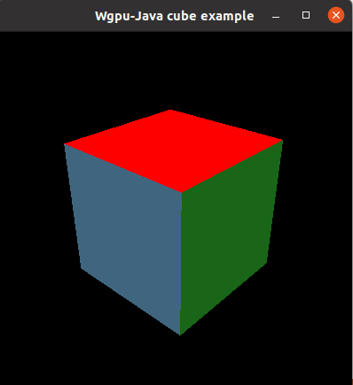
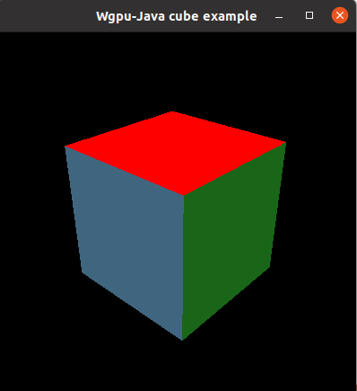

Introduction
Java bindings for Wgpu based on Wgpu-native.
Supported Platforms
Windows 7/10: Vulkan, DX12, DX11
MacOS: Metal (See Issue #4)
Linux: Vulkan
Contributing
I only have a windows/linux machine, so the best way to contribute is to write and test the platform specific code (i.e. window handling for rendering pipelines). For more details, see issue #4
Images
 


Structure :
Modules
wgpu-java/core: Libraries that make wgpu easier to use in Java. Includes a windowing library, rendering pipelines, swap chains, etc. Uses LWJGL to get Glfw bindings
wgpu-java/native: Actual bindings with wgpu-native. Bindings are created at runtime using jnr-ffi
wgpu-java/native/wgpu-native: The fork of wgpu-native that this library uses. A fork is needed to add some functions to get around some problems with jnr-ffi (the library that produces the bindings from java to rust)
wgpu-java/native/wgpu-test: A cargo crate that has functions used for unit testing the FFI code.
wgpu-java/native/jnr-gen: A tool to make java files out of the wgpu.h header file.
wgpu-java/examples: Examples of how to use wgpu-java/core
Class Naming
- if a class ends with
Descriptor, it is a direct binding to the Wgpu type. - if a class ends with
Configthat is a class from Wgpuj/core (and is usually a wrapper around a descriptor)
Notable Classes
- Wgpu: Constants from the Wgpu Library
- WgpuJavaStruct: The base class for all structs in wgpuj
Wgpuj/native
This library is the Java bindings to Wgpu-native. It uses jnr-ffi to generate the bindings at runtime. Most of the classes in here are generated by JNR Gen. For more details see the section on JNR Gen.
JNR Gen
JNR Gen is a program to generate Java enums, structs, and constants from a c header file. To run JNR Gen and update the java files, run the following command:
gradlew native:updateBindings
Example Enum
package com.noahcharlton.wgpuj.jni;
/** NOTE: THIS FILE WAS PRE-GENERATED BY JNR_GEN! */
public enum WgpuBindingType {
UNIFORM_BUFFER,
STORAGE_BUFFER,
READONLY_STORAGE_BUFFER,
SAMPLER,
COMPARISON_SAMPLER,
SAMPLED_TEXTURE,
READONLY_STORAGE_TEXTURE,
WRITEONLY_STORAGE_TEXTURE,
}
Example Struct
package com.noahcharlton.wgpuj.jni;
import com.noahcharlton.wgpuj.util.WgpuJavaStruct;
import com.noahcharlton.wgpuj.util.CStrPointer;
import com.noahcharlton.wgpuj.util.RustCString;
import jnr.ffi.Runtime;
/** NOTE: THIS FILE WAS PRE-GENERATED BY JNR_GEN! */
public class WgpuCLimits extends WgpuJavaStruct {
private final Struct.Unsigned32 maxBindGroups = new Struct.Unsigned32();
private WgpuCLimits(){}
@Deprecated
public WgpuCLimits(Runtime runtime){
super(runtime);
}
public static WgpuCLimits createHeap(){
return new WgpuCLimits();
}
public static WgpuCLimits createDirect(){
var struct = new WgpuCLimits();
struct.useDirectMemory();
return struct;
}
public int getMaxBindGroups(){
return maxBindGroups.get();
}
public void setMaxBindGroups(int x){
this.maxBindGroups.set(x);
}
}
Example Constants
package com.noahcharlton.wgpuj.jni;
/** NOTE: THIS FILE WAS PRE-GENERATED BY JNR_GEN! */
public final class Wgpu{
public static final int BIND_BUFFER_ALIGNMENT = 256;
public static final int COPY_BYTES_PER_ROW_ALIGNMENT = 256;
public static final int DEFAULT_BIND_GROUPS = 4;
public static final int DESIRED_NUM_FRAMES = 3;
public static final int MAX_ANISOTROPY = 16;
public static final int MAX_COLOR_TARGETS = 4;
public static final int MAX_MIP_LEVELS = 16;
public static final int MAX_VERTEX_BUFFERS = 16;
public static final class ShaderStage{
public static final int NONE = 0;
public static final int VERTEX = 1;
public static final int FRAGMENT = 2;
public static final int COMPUTE = 4;
}
}